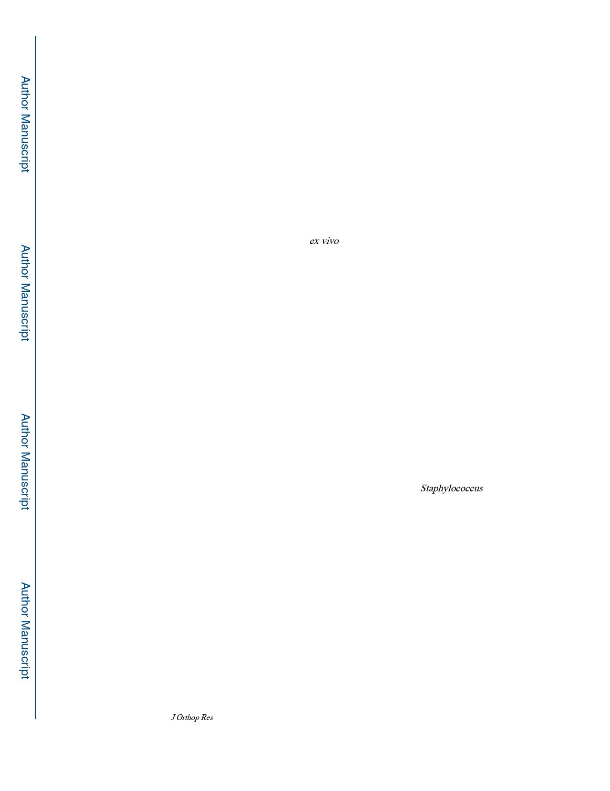

Tomizawa et al.
Page 6
Results
In this surgical model, infection was limited locally in all mice and physical debilitation was
not observed. There were no surgery related deaths in the experiments. As expected, no CFU
were recovered from any of the tissue or implant samples in the Sterile group, and 100% of
the tissues and implants in the USA300 group contained significant CFU (Fig. 2). Although
RP62A achieved 100% infection of the tissue and 60% colonization of the implant on day 7,
the bacterial burden was significantly less than that achieved by USA300 (p < 0.001, p <
0.001, respectively) by several orders of magnitude (Fig. 2A, B). Additionally, this
pathogenic potential was significantly less than that of USA300 in bacterial load on day 14
(tissue; p < 0.001, implant; p < 0.001, respectively) (Fig. 2C, D) (Supplement Table 2).
As osteolysis and reactive bone formation are salient radiographic features of implant-
associated osteomyelitis, we performed ex vivo μCT on challenged tibiae (Fig. 3). Gross
analysis of tibiae challenged with Sterile implants revealed no signs of infection, and had the
appearance of osseous integration. In contrast, USA300 challenged tibiae displayed massive
osteolysis around the implant, and extensive reactive bone formation on the cortical surface.
Remarkably, RP62A challenged tibiae were indistinguishable from the Sterile implant
controls in μCT. These observations were confirmed via quantitative analysis of the implant
hole-size, which showed the USA300 group had larger holes versus both the Sterile group
and the RP62A group, on both the medial (1.79 ± 0.31 mm2) and lateral (0.99 ± 0.32 mm2)
sides (Fig. 3B). Of note, the hole sizes of the Sterile group (medial: 0.15 ± 0.10 mm2, lateral
0.08 ± 0.04 mm2) and the RP62A challenged group (medial: 0.19 ± 0.14 mm2, lateral 0.09 ±
0.05 mm2) were close to the cross sectional area of the implant (0.10 mm2).
To carefully assess differences in histopathology, and confirm our observations of infection,
osteolysis, and implant osseous integration, we performed histology on the tibiae from the
three groups (Fig. 4). Alcian blue-hematoxylin/orange G (ABH/OG) staining failed to
demonstrate any remarkable histopathology in the RP62A challenged tibiae compared to the
Sterile controls, as there was copious bone new bone formation around the implant, intact
cortical bone, and normal bone marrow throughout (Fig 4A, B). In contrast, the marrow was
destroyed in USA300 infected tibiae (Fig. 4C) and was replaced by Staphylococcus abscess
communities (SACs). Brown and Brenn staining confirmed the absence of Gram-positive
bacteria in both the Sterile implant and RP62A infected groups (Fig. 4D, E). However,
Gram-positive clusters of bacteria could be readily seen in the center of the SACs within
USA300 infected tibiae and the surrounding soft tissues (Fig. 4F). Interestingly, staining for
tartrate-resistant acid phosphatase (TRAP) revealed more osteoclasts remodeling the new
bone formed around the implant in the RP62A group versus the Sterile group (Fig. 4G, H).
Moreover, the high-power micrographs revealed contiguous new bone formation completely
around the implants in the Sterile group (Fig. 4D, G), while the new bone formation around
the RP62A infected implants was incomplete and contained fibrous tissue at the host-
implant interface in all specimens (Fig. 4E, H). TRAP staining of USA300 infected tibiae
confirmed the presence of large numbers of osteoclasts at sites of cortical bone erosion and
remodeling reactive bone (Fig. 4I).
J Orthop Res. Author manuscript; available in PMC 2021 April 01.